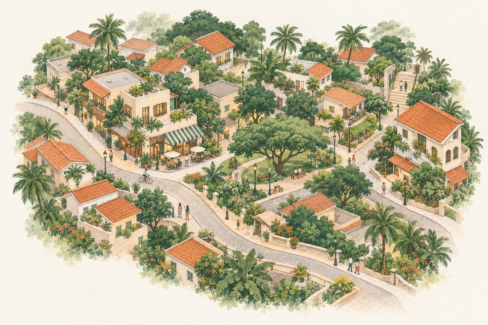
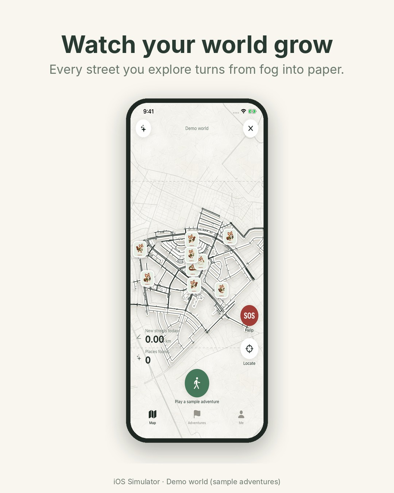
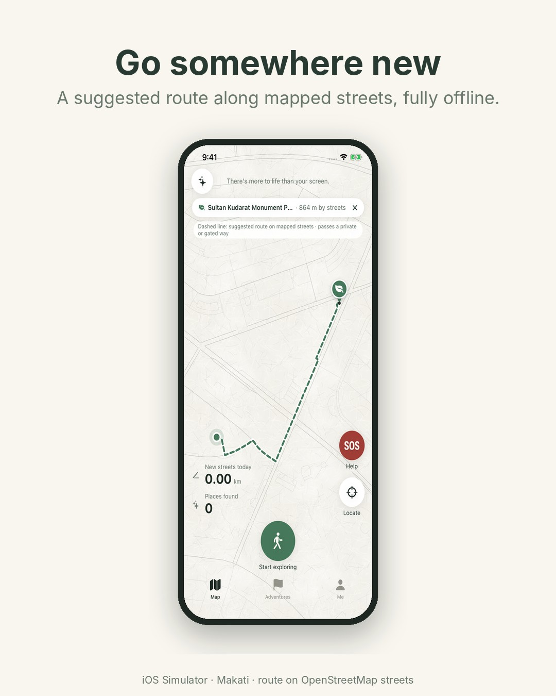
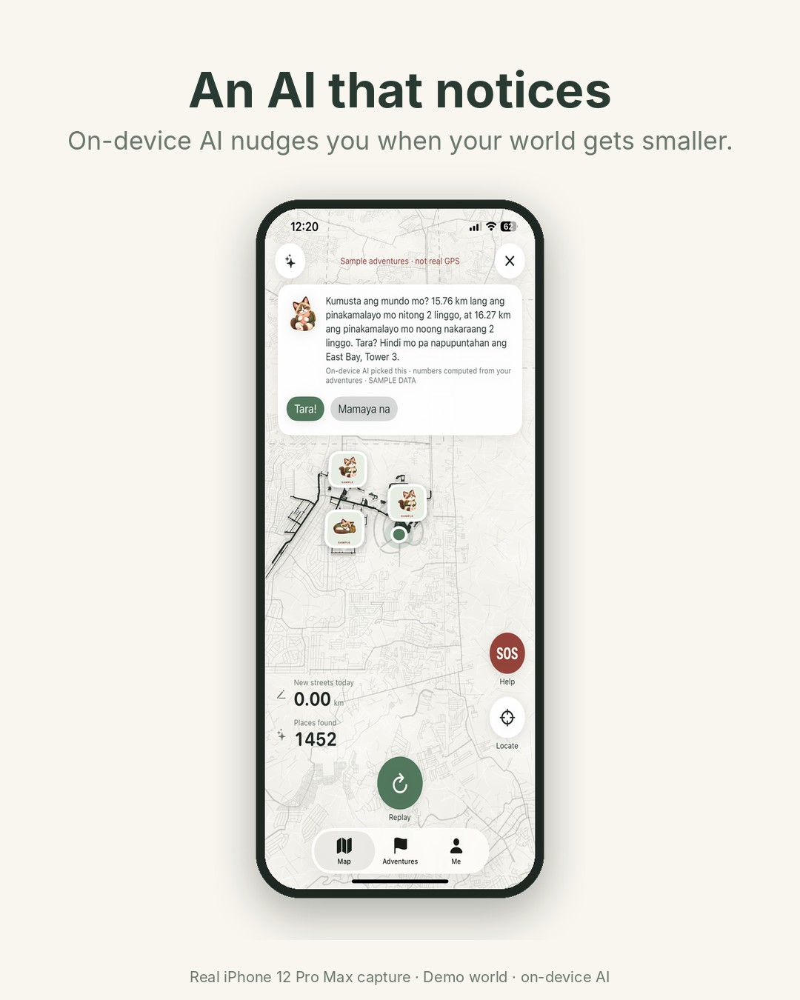
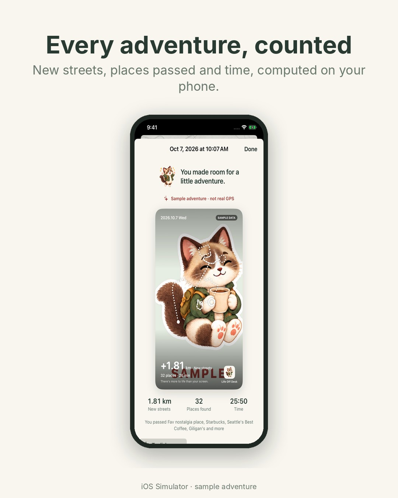
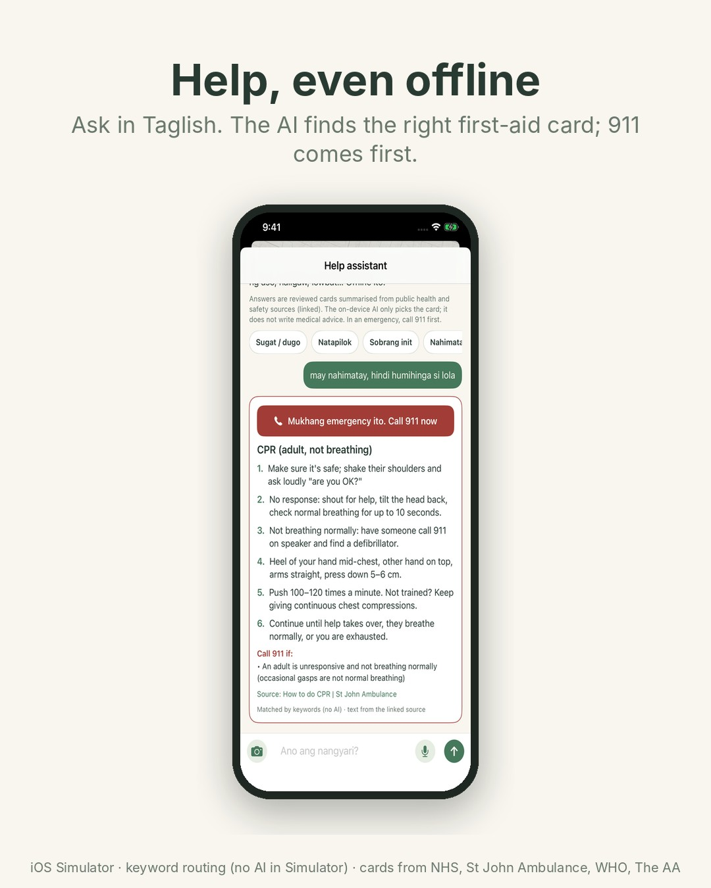

THERE’S LIFE BEYOND YOUR DESK
A little walk.
A bigger world.
Find a new corner. Take the long way home. Make a little more room for life.

For the space
between meetings.
And everything else.
You don’t have to go far
to feel a little further away.
The park you always pass. A side street you’ve never taken. That coffee break that becomes a small adventure.
Life Off Desk gives those little outings a place to live. Start a walk, uncover your surroundings, and keep a map that grows with you.
Your world opens up,
one little walk at a time.
Try a tiny adventure in our illustrated neighborhood.
Every adventure
starts somewhere.
A little of the map is yours. Start walking to see what’s around the corner.
“Saan tayo?”
is a good place to start.
A short break or a change of pace? Tell Life Off Desk what you’re in the mood for, in English or Taglish.
Suggestions happen on your iPhone and stay grounded in the places the app knows.
30 minutes. A park. A quieter moment.
The app uses your preferences to search its local catalog. Quietness needs supporting information; it won’t simply guess.
More than a line on a map.
Life Off Desk now connects the outing, the discovery and the memory afterward.
Watch your world grow.
Swipe through the ways Life Off Desk helps you explore, choose, remember and get help.





An adventure ends.
The discovery stays.
A growing map of your everyday world.
Come back to walks and rides, the paths you took, and the moments you wanted to keep. No leaderboard to chase. Just your own reasons to head out again.
A few things worth knowingBefore you step out.
Can I download the app yet?
Not yet. A working iPhone prototype exists, but there is no public build. A beta link will appear here after distribution is ready.
Is this a real map of my neighborhood?
The website uses fictional artwork and a simulated trail. The iPhone app records actual adventures. Detailed starter maps currently cover Makati CBD and Muntinlupa, with additional Metro Manila packs being prepared and reviewed.
Will it work without the internet?
Yes, after the initial setup. Starter maps live in the app and its AI runs directly on your iPhone.
Does it tell me where it’s safe to walk?
No. A suggested place is not a verified walking route. Accessibility, opening hours and access restrictions need specific evidence. Missing information is shown as unknown.
What happens to my location?
This website does not request your location. The app records only after you start an adventure and keeps its history on your phone, with local erase controls. Device backup settings may also affect where app data is stored.
Your next break
could be a little adventure.
Life Off Desk is working on iPhone.
We’re preparing it for a small beta next.